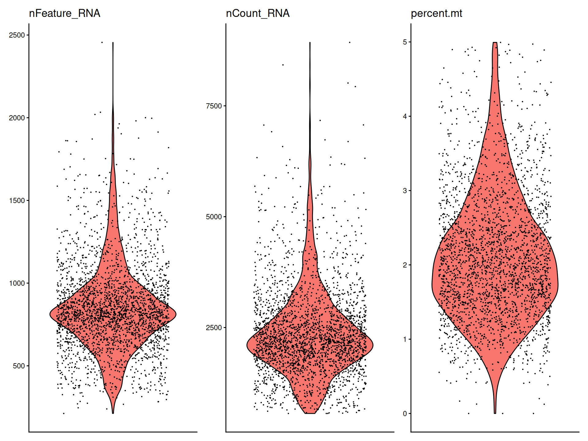
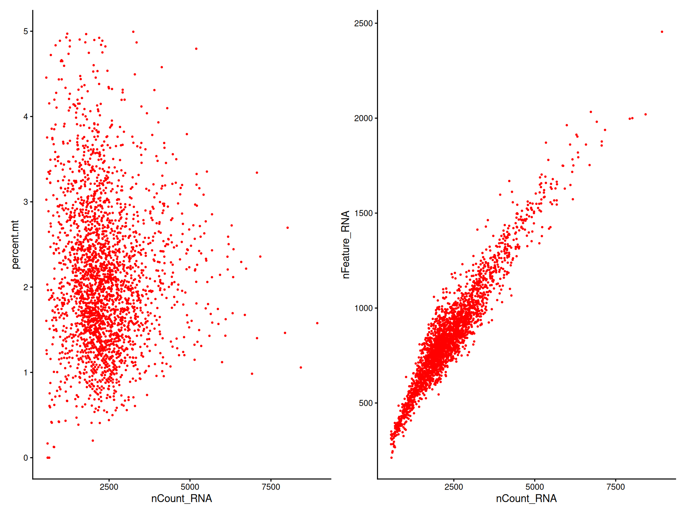
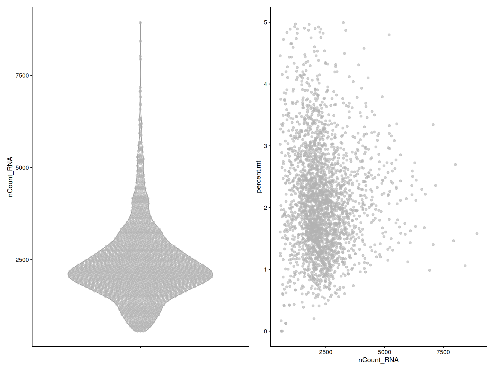
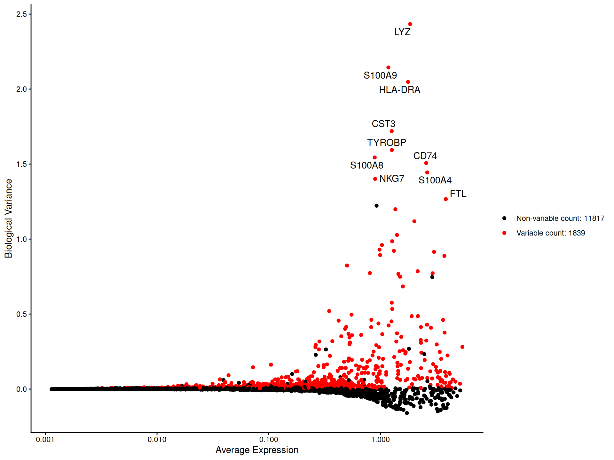
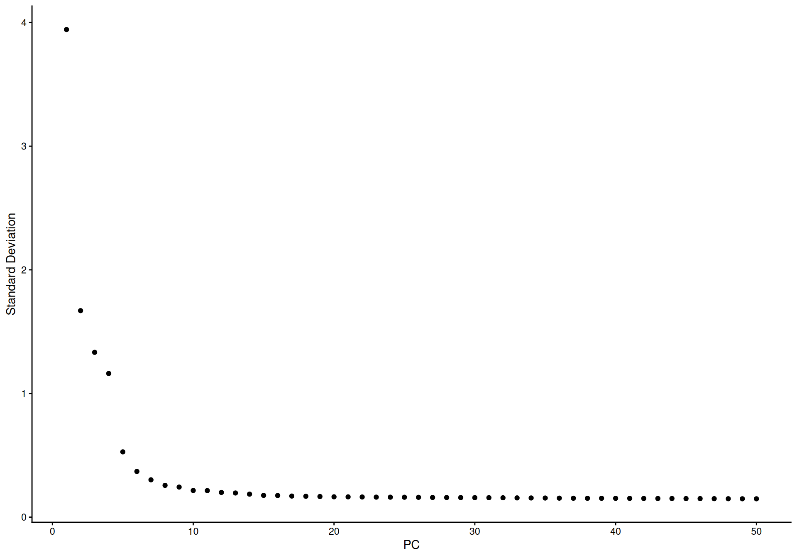
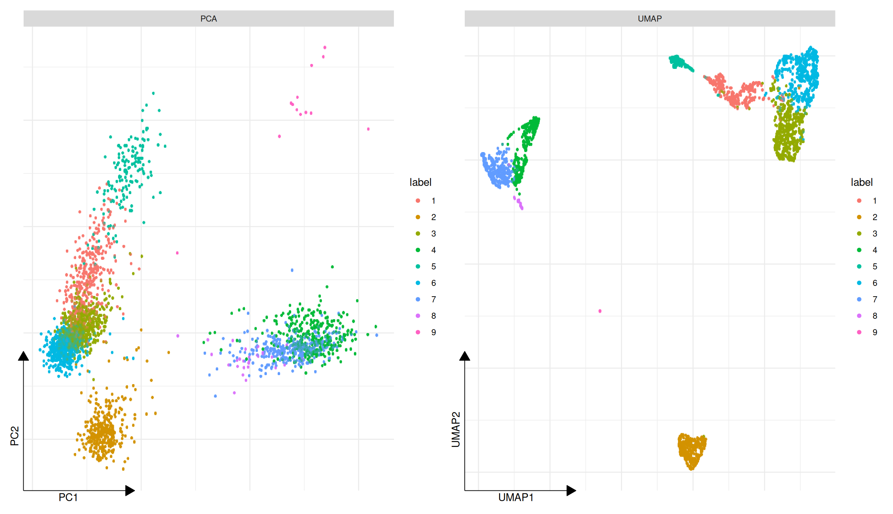
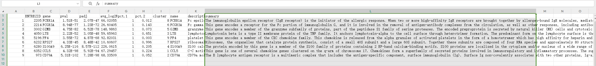
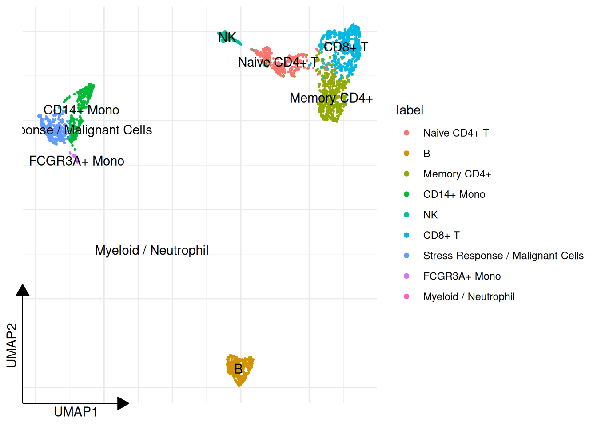
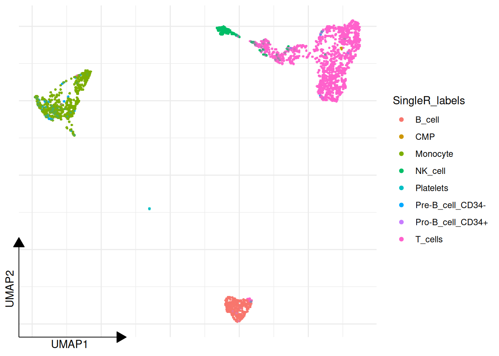

6 Core Single-Cell Workflow
This chapter is the baseline mainline for the entire package. The goal is not to teach one isolated PBMC vignette, but to show the standard route that most downstream sclet analyses assume: QC, normalization, variable features, dimensional reduction, clustering, and identity management.
Every later mainline in the book builds on top of this one. If you are unsure where to start, start here and treat the resulting object as the shared launch point for mapping, dynamics, program analysis, communication, and spatial follow-up.
6.1 Read 10X data
## class: SingleCellExperiment
## dim: 13714 2638
## metadata(1): sclet
## assays(3): counts logcounts scaled
## rownames(13714): AL627309.1 AP006222.2 ...
## PNRC2_ENSG00000215700 SRSF10_ENSG00000215699
## rowData names(9): ENSEMBL_ID Symbol_TENx ... p.value
## FDR
## colnames: NULL
## colData names(16): Sample Barcode ... label ident## reducedDimNames(2): PCA UMAP
## mainExpName: NULL## altExpNames(0):If you are starting from a local Cell Ranger directory instead, the corresponding sclet call is simply pbmc <- Read10X("filtered_feature_bc_matrix/").
6.2 QC
# colData(pbmc)$percent.mt <- PercentageFeatureSet(pbmc, "^MT-")
pbmc[["percent.mt"]] <- PercentageFeatureSet(pbmc, "^MT-")
VlnPlot(pbmc, features = c("nFeature_RNA", "nCount_RNA", "percent.mt"))
## ************************************************** >=0 | 13714 (100%)
## ************************************************** >=1 | 13713 (100%)
## ************************************************** >=2 | 13706 (100%)
## ************************************************** >=3 | 13656 (100%)
## *********************************************** >=4 | 12972 (95%)
## ********************************************** >=5 | 12519 (91%)
## ******************************************** >=6 | 12138 (89%)
## ******************************************* >=7 | 11813 (86%)
## ****************************************** >=8 | 11564 (84%)
## ***************************************** >=9 | 11319 (83%)
## **************************************** >=10 | 11095 (81%)pbmc <- subset_feature(pbmc, mincell = 3, peek=FALSE)
keep <- colData(pbmc)$nFeature_RNA > 200 &
colData(pbmc)$nFeature_RNA < 2500 &
colData(pbmc)$percent.mt < 5
pbmc <- pbmc[, keep, drop = FALSE]
pbmc## class: SingleCellExperiment
## dim: 13656 2638
## metadata(1): sclet
## assays(3): counts logcounts scaled
## rownames(13656): AL627309.1 AP006222.2 ...
## PNRC2_ENSG00000215700 SRSF10_ENSG00000215699
## rowData names(9): ENSEMBL_ID Symbol_TENx ... p.value
## FDR
## colnames: NULL
## colData names(16): Sample Barcode ... label ident## reducedDimNames(2): PCA UMAP
## mainExpName: NULL## altExpNames(0):plot1 <- FeatureScatter(pbmc, feature1 = "nCount_RNA", feature2 = "percent.mt")
plot2 <- FeatureScatter(pbmc, feature1 = "nCount_RNA", feature2 = "nFeature_RNA")
library(aplot)
plot_list(plot1, plot2)
Users can also use plotColData() to visualize the QC data.
# VlnPlot-like
p1 <- plotColData(pbmc, y = 'nCount_RNA')
# FeatureScatter-like
p2 <- plotColData(pbmc, x = "nCount_RNA", y = "percent.mt")
plot_list(p1, p2)
6.3 Ambient RNA and doublet cleanup
Quality control thresholds remove obvious outliers, but they do not solve two common single-cell annoyances: ambient RNA contamination and doublets. sclet now exposes both through SingleCellExperiment-native wrappers, so the outputs stay in colData or new assays instead of being scattered across ad hoc objects.
##
## singlet doublet
## 2538 100## [1] "counts" "logcounts" "scaled"
## [4] "decontXcounts"## [1] 0.03327015 0.13285001 0.05841325 0.11636193 0.06795781
## [6] 0.08883012RunDoubletFinder() writes doublet calls back to colData, while RunDecontX() keeps the decontaminated matrix isolated in assay(pbmc_clean, "decontXcounts"). That separation matters, because it lets you compare raw and cleaned views instead of quietly overwriting the original counts.
6.4 Variable features
pbmc <- FindVariableFeatures(pbmc, method = "scran")
top10 <- head(VariableFeatures(pbmc, method = "scran"), 10)
top10## [1] "LYZ" "S100A9" "HLA-DRA" "CST3" "TYROBP"
## [6] "S100A8" "CD74" "S100A4" "NKG7" "FTL"
6.5 Zero-preserving imputation
If you want a denoised expression view for visualization or downstream ranking, RunImputation() adds a zero-preserving ALRA layer without contaminating the original counts or logcounts. In other words, this is an extra view of the data, not a silent replacement of the baseline matrix.
pbmc_impute <- pbmc
pbmc_impute <- NormalizeData(pbmc_impute)
pbmc_impute <- RunImputation(pbmc_impute, assay = "logcounts")## Read matrix with 2638 cells and 13656 genes
## Chose k=16
## Getting nonzeros
## Randomized SVD
## Find the 0.001000 quantile of each gene
## Sweep
## Scaling all except for 30 columns
## 0.00% of the values became negative in the scaling process and were set to zero
## The matrix went from 6.21% nonzero to 48.88% nonzero## [1] "counts" "logcounts" "scaled"
## [4] "alra_imputed"## [1] "counts" "logcounts" "scaled"
## [4] "alra_imputed"## [1] "alra_imputed"The imputed output is stored as alra_imputed, so downstream code can opt into it explicitly instead of being forced into a globally smoothed workflow.
6.6 Dimensional reduction
pbmc <- ScaleData(pbmc)
pbmc <- RunPCA(pbmc, subset_row = VariableFeatures(pbmc, method = "scran"), layer = "scaled")
ElbowPlot(pbmc)
Here the PCA step is intentionally pointed to the logical scaled layer. In current sclet, this is the recommended way to declare which expression view should drive the downstream reduction, instead of hard-coding the underlying assay name.
6.7 Clustering
set.seed(2024-10-01)
pbmc <- FindNeighbors(pbmc, dims = 1:10)
pbmc <- FindClusters(pbmc, resolution = 0.88)
head(Idents(pbmc), 5)## [1] 1 2 3 4 5
## Levels: 1 2 3 4 5 6 7 8 96.8 UMAP
pbmc <- RunUMAP(pbmc, 1:10)
library(aplot)
# DimPlot delegates to ggsc::sc_dim
p1 <- DimPlot(pbmc, reduction="PCA")
p2 <- DimPlot(pbmc, reduction="UMAP")
plot_list(gglist = list(PCA=p1, UMAP=p2))
6.9 Find Markers
# find all markers of cluster 2
cluster2.markers <- FindMarkers(pbmc, ident.1 = 2)
head(cluster2.markers, n = 5)## pval padj avg_log2FC pct.1 pct.2
## CD79A 0.000000e+00 0.000000e+00 6.850346 0.928 0.041
## MS4A1 0.000000e+00 0.000000e+00 5.692234 0.844 0.053
## TCL1A 6.281095e-271 2.859155e-267 6.797039 0.620 0.021
## CD79B 4.459161e-270 1.522358e-266 4.604088 0.908 0.142
## HLA-DQA1 7.705603e-267 2.104554e-263 3.968233 0.888 0.117# find all markers distinguishing cluster 5 from clusters 0 and 3
cluster5.markers <- FindMarkers(pbmc, ident.1 = 5, ident.2 = c(0, 3))
head(cluster5.markers, n = 5)## pval padj avg_log2FC pct.1 pct.2
## GZMB 2.842935e-130 3.882312e-126 8.241647 0.968 0.039
## PRF1 6.636238e-115 4.227994e-111 6.131132 0.961 0.089
## FGFBP2 9.288211e-115 4.227994e-111 7.809123 0.877 0.035
## NKG7 3.830269e-114 1.307654e-110 7.468703 1.000 0.139
## GNLY 9.945133e-108 2.716215e-104 7.591214 0.961 0.129# find markers for every cluster compared to all remaining cells,
# report only the positive ones
library(dplyr)
pbmc.markers <- FindAllMarkers(pbmc, only.pos = TRUE)
topN_marker <- function(markers, n) {
markers %>%
group_by(cluster) %>%
dplyr::filter(avg_log2FC > 1) %>%
slice_head(n = n) %>%
ungroup()
}
top10 <- topN_marker(pbmc.markers, 10)
split(top10$gene, top10$cluster)## $`1`
## [1] "CCL5" "GZMK" "NKG7" "CST7" "GZMA" "CTSW" "IL32" "CD3D"
##
## $`2`
## [1] "CD79A" "MS4A1" "TCL1A" "CD79B"
## [5] "HLA-DQA1" "LINC00926" "VPREB3" "HLA-DQB1"
## [9] "CD74" "HLA-DRA"
##
## $`3`
## [1] "LTB" "IL32" "IL7R" "CD3D" "LDHB"
##
## $`4`
## [1] "IFITM3" "CD68" "CFD"
## [4] "SERPINA1" "SPI1" "LST1"
## [7] "RP11-290F20.3" "IFI30" "AIF1"
## [10] "FCER1G"
##
## $`5`
## [1] "GZMB" "FGFBP2" "SPON2" "PRF1" "GNLY" "CLIC3"
## [7] "XCL2" "KLRD1" "CST7" "GZMA"
##
## $`6`
## [1] "LDHB" "CD3D"
##
## $`7`
## [1] "S100A8" "S100A9" "LGALS2" "FCN1" "CD14" "TYROBP"
## [7] "LYZ" "MS4A6A" "CST3" "LGALS1"
##
## $`8`
## [1] "FCER1A" "CLEC10A" "HLA-DQA2" "CPVL" "HLA-DQA1"
## [6] "HLA-DQB1" "HLA-DRB5" "HLA-DMB" "HLA-DPA1" "CST3"
##
## $`9`
## [1] "GP9" "AP001189.4" "ITGA2B" "LY6G6F"
## [5] "TMEM40" "SEPT5" "TREML1" "CLDN5"
## [9] "HGD" "PTCRA"6.9.1 Marker gene information
top1 <- topN_marker(pbmc.markers, 1)
gene_table <- gene_summary_table(top1, gene_col = 'gene',
cluster_col = 'cluster', keyType='SYMBOL', output = "data.frame")
gene_table## ENTREZID gene pval padj avg_log2FC
## 1 10410 IFITM3 2.344684e-254 3.201900e-250 2.153002
## 2 2205 FCER1A 1.406360e-225 1.920525e-221 2.230122
## 3 2815 GP9 0.000000e+00 0.000000e+00 3.143334
## 4 3002 GZMB 2.778650e-273 3.794525e-269 3.466058
## 5 3945 LDHB 4.403409e-102 5.011080e-99 1.152535
## 6 4050 LTB 1.225354e-106 1.673344e-102 1.541616
## 7 6279 S100A8 2.558711e-277 3.494176e-273 3.906362
## 8 6352 CCL5 2.778734e-237 3.794639e-233 3.152154
## 9 973 CD79A 0.000000e+00 0.000000e+00 2.694100
## pct.1 pct.2 cluster avgExpr statistic auc name
## 1 0.932 0.127 4 2.418209 693752.5 0.9277929 IFITM3
## 2 0.862 0.011 8 2.251977 70201.0 0.9278360 FCER1A
## 3 0.923 0.002 9 3.146220 32806.5 0.9613626 GP9
## 4 0.968 0.068 5 3.610194 376194.5 0.9774713 GZMB
## 5 0.933 0.606 6 2.508279 914162.0 0.7907531 LDHB
## 6 0.978 0.633 3 3.239759 909171.0 0.8014010 LTB
## 7 0.991 0.178 7 4.320580 730682.0 0.9824203 S100A8
## 8 0.963 0.216 1 3.653349 766150.5 0.9475775 CCL5
## 9 0.928 0.041 2 2.762219 763951.5 0.9609731 CD79A
## description
## 1 interferon induced transmembrane protein 3
## 2 Fc epsilon receptor Ia
## 3 glycoprotein IX platelet
## 4 granzyme B
## 5 lactate dehydrogenase B
## 6 lymphotoxin beta
## 7 S100 calcium binding protein A8
## 8 C-C motif chemokine ligand 5
## 9 CD79a molecule
## summary
## 1 Interferon-induced transmembrane (IFITM) proteins are a family of interferon induced antiviral proteins. The family contains five members, including IFITM1, IFITM2 and IFITM3 and belong to the CD225 superfamily. The protein encoded by this gene restricts cellular entry by diverse viral pathogens, such as influenza A virus, Ebola virus and Sars-CoV-2. [provided by RefSeq, Nov 2021]
## 2 The immunoglobulin epsilon receptor (IgE receptor) is the initiator of the allergic response. When two or more high-affinity IgE receptors are brought together by allergen-bound IgE molecules, mediators such as histamine that are responsible for allergy symptoms are released. This receptor is comprised of an alpha subunit, a beta subunit, and two gamma subunits. The protein encoded by this gene represents the alpha subunit. [provided by RefSeq, Aug 2011]
## 3 This gene encodes a small membrane glycoprotein found on the surface of human platelets. It forms a 1-to-1 noncovalent complex with glycoprotein Ib, a platelet surface membrane glycoprotein complex that functions as a receptor for von Willebrand factor. The complete receptor complex includes noncovalent association of the alpha and beta subunits with the protein encoded by this gene and platelet glycoprotein V. Defects in this gene are a cause of Bernard-Soulier syndrome, also known as giant platelet disease. These patients have unusually large platelets and have a clinical bleeding tendency. [provided by RefSeq, Oct 2008]
## 4 This gene encodes a member of the granzyme subfamily of proteins, part of the peptidase S1 family of serine proteases. The encoded preproprotein is secreted by natural killer (NK) cells and cytotoxic T lymphocytes (CTLs) and proteolytically processed to generate the active protease, which induces target cell apoptosis. This protein also processes cytokines and degrades extracellular matrix proteins, and these roles are implicated in chronic inflammation and wound healing. Expression of this gene may be elevated in human patients with cardiac fibrosis. [provided by RefSeq, Sep 2016]
## 5 This gene encodes the B subunit of lactate dehydrogenase enzyme, which catalyzes the interconversion of pyruvate and lactate with concomitant interconversion of NADH and NAD+ in a post-glycolysis process. Alternatively spliced transcript variants have been found for this gene. Recent studies have shown that a C-terminally extended isoform is produced by use of an alternative in-frame translation termination codon via a stop codon readthrough mechanism, and that this isoform is localized in the peroxisomes. Mutations in this gene are associated with lactate dehydrogenase B deficiency. Pseudogenes have been identified on chromosomes X, 5 and 13. [provided by RefSeq, Feb 2016]
## 6 Lymphotoxin beta is a type II membrane protein of the TNF family. It anchors lymphotoxin-alpha to the cell surface through heterotrimer formation. The predominant form on the lymphocyte surface is the lymphotoxin-alpha 1/beta 2 complex (e.g. 1 molecule alpha/2 molecules beta) and this complex is the primary ligand for the lymphotoxin-beta receptor. The minor complex is lymphotoxin-alpha 2/beta 1. LTB is an inducer of the inflammatory response system and involved in normal development of lymphoid tissue. Lymphotoxin-beta isoform b is unable to complex with lymphotoxin-alpha suggesting a function for lymphotoxin-beta which is independent of lympyhotoxin-alpha. Alternative splicing results in multiple transcript variants encoding different isoforms. [provided by RefSeq, Jul 2008]
## 7 The protein encoded by this gene is a member of the S100 family of proteins containing 2 EF-hand calcium-binding motifs. S100 proteins are localized in the cytoplasm and/or nucleus of a wide range of cells, and involved in the regulation of a number of cellular processes such as cell cycle progression and differentiation. S100 genes include at least 13 members which are located as a cluster on chromosome 1q21. This protein may function in the inhibition of casein kinase and as a cytokine. Altered expression of this protein is associated with the disease cystic fibrosis. Multiple transcript variants encoding different isoforms have been found for this gene. [provided by RefSeq, Jan 2016]
## 8 This gene is one of several chemokine genes clustered on the q-arm of chromosome 17. Chemokines form a superfamily of secreted proteins involved in immunoregulatory and inflammatory processes. The superfamily is divided into four subfamilies based on the arrangement of the N-terminal cysteine residues of the mature peptide. This chemokine, a member of the CC subfamily, functions as a chemoattractant for blood monocytes, memory T helper cells and eosinophils. It causes the release of histamine from basophils and activates eosinophils. This cytokine is one of the major HIV-suppressive factors produced by CD8+ cells. It functions as one of the natural ligands for the chemokine receptor chemokine (C-C motif) receptor 5 (CCR5), and it suppresses in vitro replication of the R5 strains of HIV-1, which use CCR5 as a coreceptor. Alternative splicing results in multiple transcript variants that encode different isoforms. [provided by RefSeq, Jul 2013]
## 9 The B lymphocyte antigen receptor is a multimeric complex that includes the antigen-specific component, surface immunoglobulin (Ig). Surface Ig non-covalently associates with two other proteins, Ig-alpha and Ig-beta, which are necessary for expression and function of the B-cell antigen receptor. This gene encodes the Ig-alpha protein of the B-cell antigen component. Alternatively spliced transcript variants encoding different isoforms have been described. [provided by RefSeq, Jul 2008]
6.10 Cell cluster annotation
new_labels <- c(
"1" = "Naive CD4+ T",
"2" = "B",
"3" = "Memory CD4+",
"4" = "CD14+ Mono",
"5" = "NK",
"6" = "CD8+ T",
"7" = "Stress Response / Malignant Cells",
"8" = "FCGR3A+ Mono",
"9" = "Myeloid / Neutrophil"
)
pbmc <- RenameIdents(pbmc, new_labels)
DimPlot(pbmc, reduction="UMAP") + ggsc::sc_dim_geom_label()
6.11 Automatic Annotation (SingleR)
sclet provides RunSingleR to easily perform automatic annotation using SingleR.
# This requires SingleR and celldex packages.
hpca <- celldex::HumanPrimaryCellAtlasData()
pbmc2 <- RunSingleR(pbmc, ref = hpca, labels = hpca$label.main)
# or be explicit about the expression layer used for annotation
pbmc2 <- RunSingleR(pbmc, ref = hpca, labels = hpca$label.main, layer = "logcounts")
# View the results
head(pbmc2$SingleR_labels)## [1] "T_cells" "B_cell" "T_cells" "Monocyte" "NK_cell"
## [6] "T_cells"## $id
## [1] "singler"
##
## $type
## [1] "mapping"
##
## $status
## [1] "completed"
##
## $method
## [1] "SingleR"
##
## $inputs
## $inputs$assay
## [1] "logcounts"
##
## $inputs$layer
## [1] "logcounts"
##
## $inputs$reference_class
## [1] "SummarizedExperiment"
##
## $inputs$mode
## [1] "label_transfer"
##
##
## $artifacts
## $artifacts$labels_col
## [1] "SingleR_labels"
##
## $artifacts$pruned_labels_col
## [1] "SingleR_pruned.labels"
##
## $artifacts$score_col
## [1] "singler_score"
##
## $artifacts$mapping_type
## [1] "reference_mapping"
##
##
## $params
## list()
##
## $summary
## $summary$n_labels
## [1] 8
##
## $summary$n_pruned_labels
## [1] 8
##
## $summary$mean_score
## [1] 0.1371315
##
##
## $created_at
## [1] "2026-10-22 15:14:16 CST"
RunSingleR() now follows the same layer contract as the rest of the package. If you do not specify layer, it resolves from DefaultLayer(pbmc) and falls back to a non-scaled expression source when needed.
In addition to writing annotation labels back to colData, it also records a lightweight reference-mapping state that you can inspect with get_mapping(pbmc).